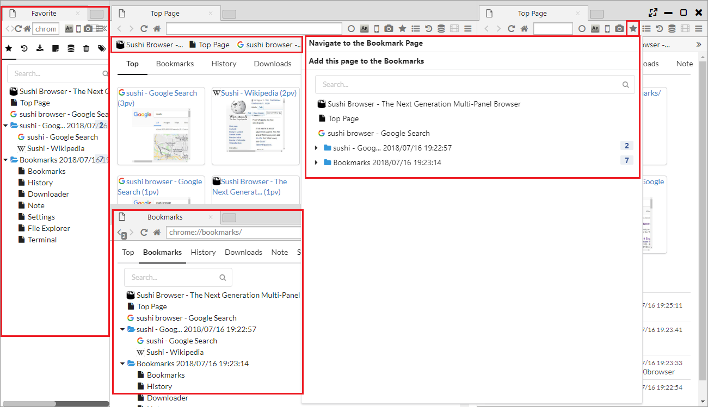

ブックマーク
Top Page、メニューバー、サイドバー、ブックマークバーからブックマークにアクセスできます。
1. ブックマークページ
メニューバー、サイドバーからアクセスするブックマークページでは、以下の操作が行えます。
- ドラッグアンドドロップによる移動
- 上部の検索ボックスからの検索
- 右クリックメニューによる操作
- 新しいタブで開く
- 新しいプライベートタブで開く
- Open Link in New Tor Tab
- 新しいセッションタブで開く
- 新しいウインドウで開く
- Open Link in New Window with a Row ・・・ 新しいウインドウにパネルを横に並べて複数のリンクを開きます
- Open Link in New Window with two Rows ・・・ 新しいウインドウにパネルを2行に並べて複数のリンクを開きます
- 編集
- コピー ・・・ URLをコピーします
- 削除
- ブックマークを追加
- フォルダーを追加
Top Pageからアクセスされるブックマークページは、編集を目的としており、 Webページを開く場合は、サイドバーのブックマークと異なり、項目をダブルクリックする必要があります。 
2. ブックマークバー
ブラウザ上部に表示されるバーで、デフォルトでは、Top Pageでのみ表示されます。
- 「メインメニュー > Window SubMenu > ブックマーク バーを常に表示」を選択すると、常にブックマークバーが表示されます。
- 「メインメニュー > Window SubMenu > Show bookmark bar on top page」を選択すると、Top Pageでのブックマークバーの表示有無が変更されます。
- 「メインメニュー > Window SubMenu > Show bookmark bar on mouse hover」を選択すると、画面上部にマウスカーソルを移動するとブックマークバーが表示されます。